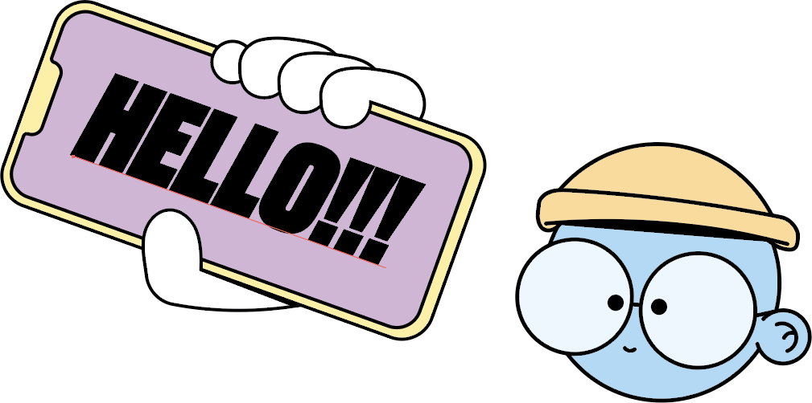
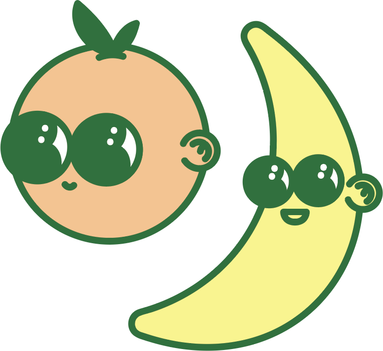
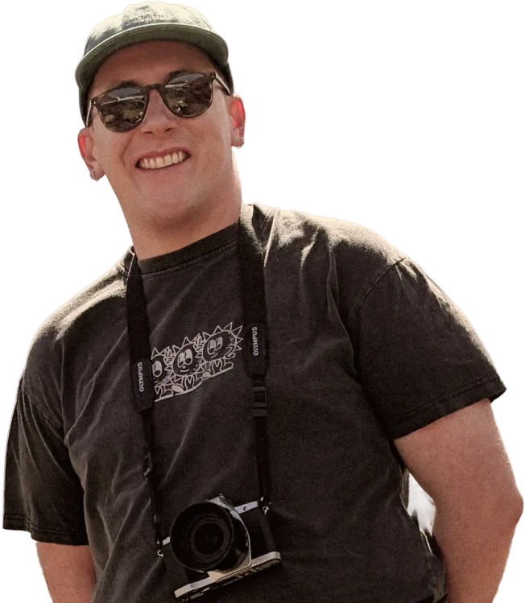

I make complicated services feel obvious. Then I go home and make things that blink.
Callum, service designer at Victoria University in Wellington. I run the research, map the mess, and prototype the fix. Off the clock: Raspberry Pis, 3D prints and little drawn guys.

Work

Mapping every digital moment of uni life, from enrolment to alumni
Interviews, workshops and a full student journey map, so the university can fix the moments that frustrate students most.
↑ [X]% [METRIC] · ↓ [X]% [METRIC]
Read the case study
Know how packed your bus, train or ferry is before it arrives
Crowdsourced vibe reports for Wellington public transport.
[X] users · [X] reports

A community platform where every conversation lives on a project
No endless feed. Testing whether constraints make for better conversations.
4 weeks · Figma, React, Supabase
Made
Prints, drawings, half-finished things. Not case studies, just fun.


About
I design with empathy, then prototype until it breaks. I follow threads, make leaps, and occasionally 3D print something at midnight.
[ONE LINE ON THE WORK YOU WANT NEXT.]
- Research
- Journey mapping
- Service blueprints
- Prototyping
- CAD + 3D print
- Raspberry Pi
let's build something.
Got an idea? A weird one counts.